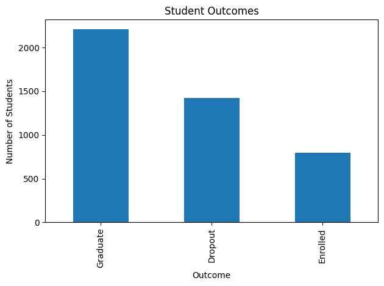
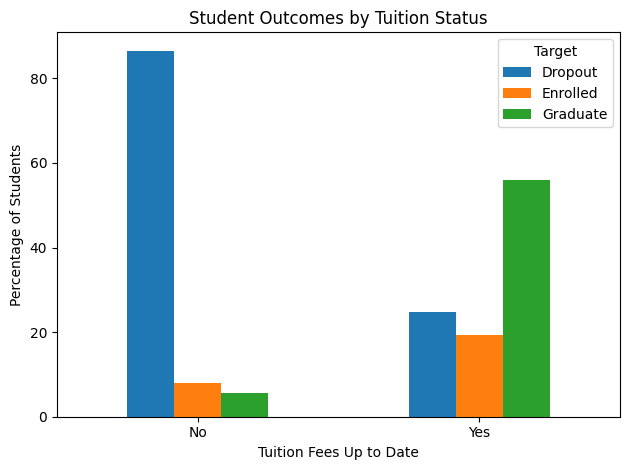
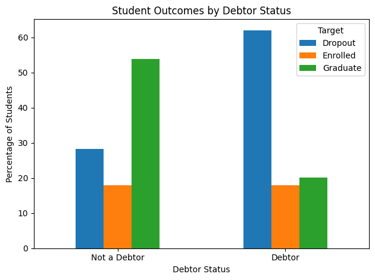
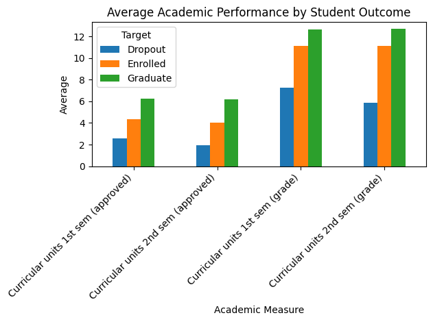

EDUCATION ANALYTICS CASE STUDY
Student Dropout & Retention Analysis
What patterns distinguish students who graduate from those who drop out or remain enrolled? This exploratory analysis examined academic, financial, demographic, and broader socioeconomic characteristics associated with student outcomes.
PROJECT OVERVIEW
The Question
Student dropout is rarely explained by one variable alone. Academic progress, financial strain, personal circumstances, and broader economic conditions can all appear alongside differences in student outcomes.
I used exploratory data analysis to compare patterns among students classified as graduates, dropouts, or still enrolled. The goal was not to claim that any single characteristic caused a student to leave school, but to identify patterns that could support deeper investigation and earlier intervention.
DATASET
The Analytical Sample
FINDING 01
The Outcome Classes Were Not Evenly Distributed
Before comparing predictors, I first examined the distribution of the target variable. Understanding how many students were in each outcome category was important because class imbalance can affect both interpretation and predictive modeling.

Student outcome distribution across the Graduate, Dropout, and Enrolled categories.
FINDING 02
Tuition Status Showed a Clear Outcome Pattern
Whether tuition fees were up to date was one of the more meaningful financial indicators in the analysis.
Students with unresolved tuition obligations showed a less favorable outcome pattern than students whose tuition status was current.

Student outcomes by tuition status. The comparison highlights how financial standing may coincide with different retention and graduation patterns.
FINDING 03
Debtor Status Was Also Associated With Student Outcomes
Debtor status provided another way to examine financial strain. Students classified as debtors showed a different distribution of outcomes compared with students who were not debtors.

Student outcomes by debtor status. Financial vulnerability appeared alongside less favorable educational outcomes in this sample.
Tuition status and debtor status should not be interpreted in isolation. They may overlap with employment conditions, family resources, prior academic preparation, and other factors that were not fully controlled in this exploratory analysis.
FINDING 04
Academic Performance Provided One of the Strongest Signals
Early academic performance was especially informative. Differences in curricular performance appeared more directly connected to the student's educational trajectory than many of the broader socioeconomic variables.

Academic performance across student outcome groups. Early progress provides an important signal for identifying students who may need additional academic support.
Practical implication
Financial risk indicators can help identify students facing structural barriers, while academic performance can provide a more immediate signal that intervention may be needed during the student's educational journey.
ADDITIONAL VARIABLES
Demographic and Economic Context Required More Caution
I also explored characteristics such as age, occupation, scholarship status, unemployment, and inflation.
These variables are useful for understanding the environment in which students are studying, but they do not all operate at the same analytical level.
For example, age and scholarship status describe individual students, while unemployment and inflation describe broader economic conditions. A national or regional economic indicator cannot automatically explain why one individual student dropped out.
ANALYTICAL APPROACH
From Raw Variables to Interpretable Patterns
The project relied primarily on exploratory data analysis and grouped comparisons.
I examined the target distribution, compared outcome proportions across categorical variables, evaluated student-level and contextual characteristics, and used visualizations to communicate where meaningful differences appeared.
This approach was appropriate because the objective was to understand patterns before making stronger predictive or causal claims.
LIMITATIONS
What This Analysis Cannot Tell Us
The project was observational and exploratory. The relationships identified in the data should therefore be treated as associations rather than causal effects.
Variables such as tuition status, debtor status, age, scholarship support, occupation, unemployment, and inflation can also interact with one another.
A more advanced analysis could use multivariable modeling, validation data, and additional institutional or student-level information to determine which predictors remain important after accounting for other factors.
CONCLUSION
Retention Appears to Be Both Academic and Structural
The analysis suggested that student outcomes were connected to multiple dimensions of the student experience.
Academic progress provided an important direct signal, while tuition and debtor status highlighted the potential role of financial barriers.
Broader demographic and economic characteristics added context, but required more careful interpretation because association does not establish individual-level causation.
Main takeaway
Student retention should not be reduced to a single predictor. The strongest analytical approach combines academic performance, financial vulnerability, and student context to identify where support may be most useful.